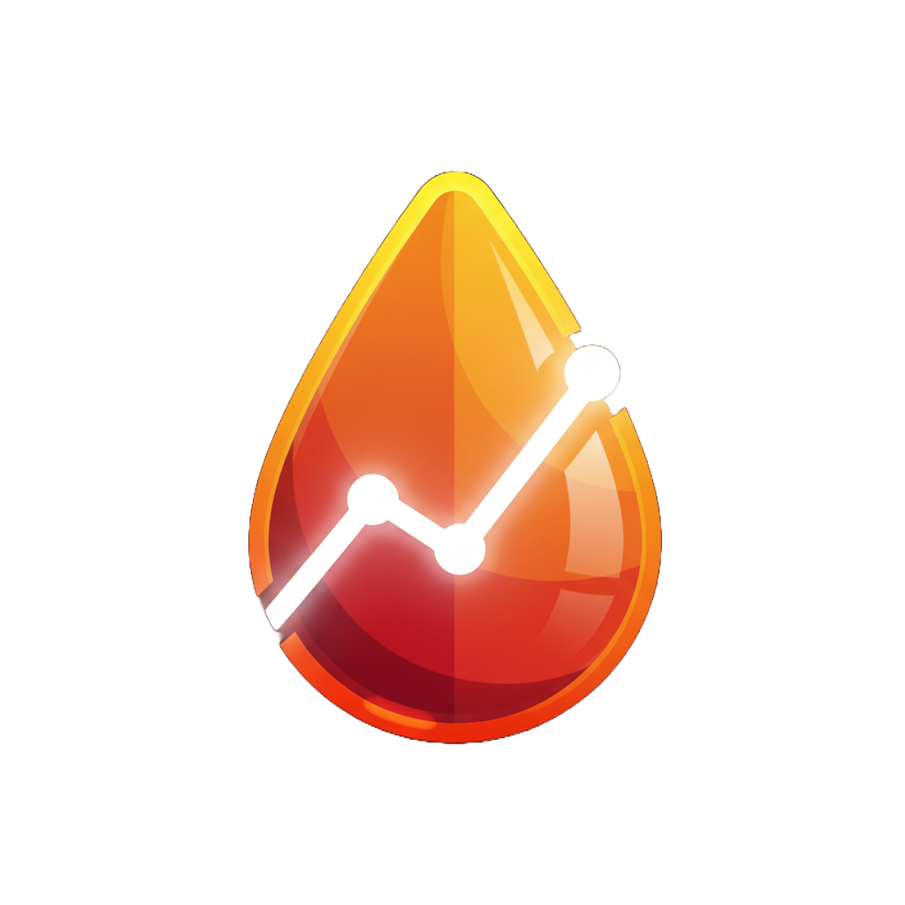

Latest release:
Loading…
Your CGM data,
on any screen
A free, native desktop app for blood sugar monitoring — no browser, no cloud middleman.
🌙 Nightscout
📡 Dexcom Share
💙 Tandem Source
🩸 Medtronic CareLink
📶 xDrip+
Windows • macOS • Linux • Raspberry Pi • Embedded Linux
* plus unofficial ports for BSD and Haiku